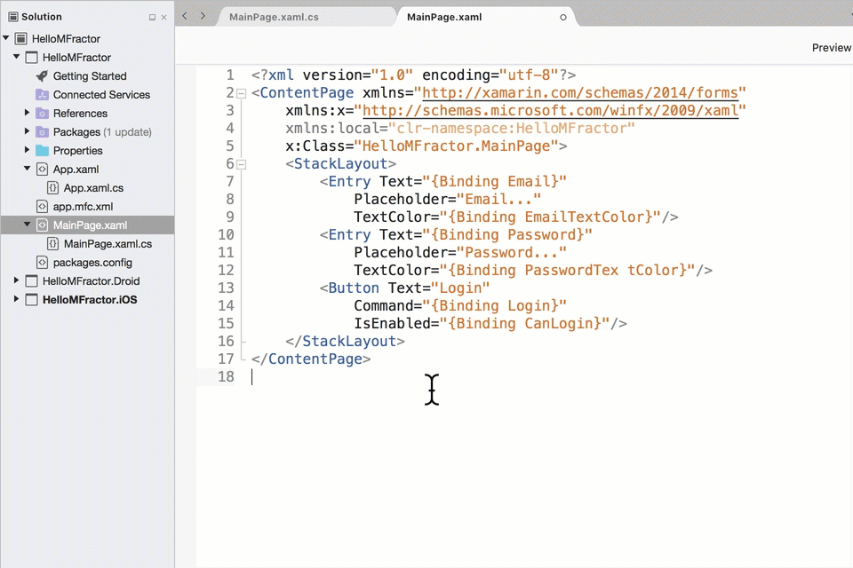

Xamarin.Forms XAML Refactoring
Autogenerated by MFractor v3.2.19
Edit Color Declaration
Configuration Id: com.mfractor.code_actions.xaml.edit_inline_color
The Edit Color Declaration code actions allows visual editing of colors from your Xaml.
Simply right click on a Xaml node that is a System.Drawing.Color or Xamarin.Forms.Color and select Edit Color. Then you can use the color picker dialog to select a new color value:

Extract Attribute Value Into Property Binding
Configuration Id: com.mfractor.code_actions.xaml.extract_into_property_binding
When a Xaml attribute is initialised by a literal value (rather than an expression), this refactoring action allows a developer to extract that literal value as a property into the binding context and replace the attribute initialiser with a binding expression.
For example, given the attribute initialiser Text=\"Hello Xamarin.Forms!\", this refactoring would generate a user named property (EG: Message) in the binding context, initiliase it with the string literal \"Message\" and replace the attribute value with the binding expresion {Binding Message}.";

Uses:
Extract XAML Into Control
Configuration Id: com.mfractor.code_actions.xaml.extract_xaml_into_control

Extracts a XAML layout container that derives from Xamarin.Forms.Layout into a new XAML control.
Configurable Properties
| Name | Type | Defaults To | Description |
|---|---|---|---|
| DefaultXamlNamespace | System.String | controls | What is the default name of the XAML namespace for the new control? |
| DefaultNamespace | System.String | What is the default name of the C# namespace for the new control? If empty, the projects default namespace will be used. |
Uses:
Migrate OnPlatform Usage
Configuration Id: com.mfractor.code_actions.xaml.migrate_on_platform_usage
In Xamarin.Forms 2.3.4, there were changes made to the OnPlatform class to enable greater platform-specifics flexibility in the future. These changes deprecated the OnPlatform.iOS, OnPlatform.Android and OnPlatform.WinPhone properties in favour of a generic On element to control the platform specifics.
The Migrate OnPlatform Usage code action is a refactoring that converts a pre-2.3.4 Xamarin.Forms OnPlatform usage to the new methodology using the nested On element.
For example, given the following OnPlatform:
<OnPlatform x:TypeArguments="Thickness"
Android="0, 0, 0, 0"
iOS="0, 20, 0, 0">
<OnPlatform.WinPhone>
0, 0, 0, 0
</OnPlatform.WinPhone>
</OnPlatform>
MFractor would migrate the code to use the On element:
<OnPlatform x:TypeArguments="Thickness">
<On Platform="Android">0, 0, 0, 0</On>
<On Platform="iOS">0, 20, 0, 0</On>
<On Platform="WinPhone">0, 0, 0, 0</On>
</OnPlatform>

Rename Xaml Namespace
Configuration Id: com.mfractor.code_actions.xaml.rename_xaml_namespace
The Rename Xaml Namespace code action will perform a symbolic rename-refactor on a particular Xaml within your document.
This is handy as you can then rename namespaces in a document without using a Find+Replace action; the rename xaml namespace action works against symbols so it will always rename only the namespace symbols.
To action this refactoring:
- Within a Xaml document right click or
Alt+Returnon anxmlnsattribute (EG:xmlns:local="clr-namespace:myApp") - Select Refactor.
- Then Rename Namespace.
- Enter a new namespace name when prompted and then click enter.
Your new namespace will be applied across the document:

Uses:
Replace String With Localisation Lookup
Configuration Id: com.mfractor.code_actions.xaml.replace_with_localisation_lookup

This refactoring action will open the document localisation wizard, a dialog that walks through all strings in the current document and lets you easily replace them with a localised value lookup.
When localising XAML files, MFractor assumes you are adhering to the best practices as outlined in Localizing Xamarin.Forms Apps with RESX Resource Files.